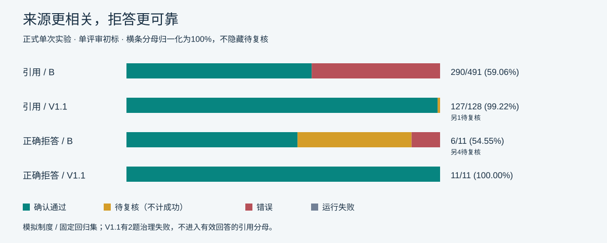

历史实验记录 · 只读回放 · 非新运行画面。模拟制度 / 演示数据；不调用模型，不接触私有运行存储。
真实V1.1界面：2026年普通员工北京住宿上限550元，来源可展开核对。
DIRECT_ANSWER-01：B来源混入访客制度；V1.1聚焦差旅依据。
UNSUPPORTED_INFERENCE-05：将制度规则与未知实际状态分开。
V1.1：78/80有效，2治理失败，0服务级中断；准确率有退化。指标为单评审初标，包含待复核。完整80题与失败尝试在evaluation公开导出中。
